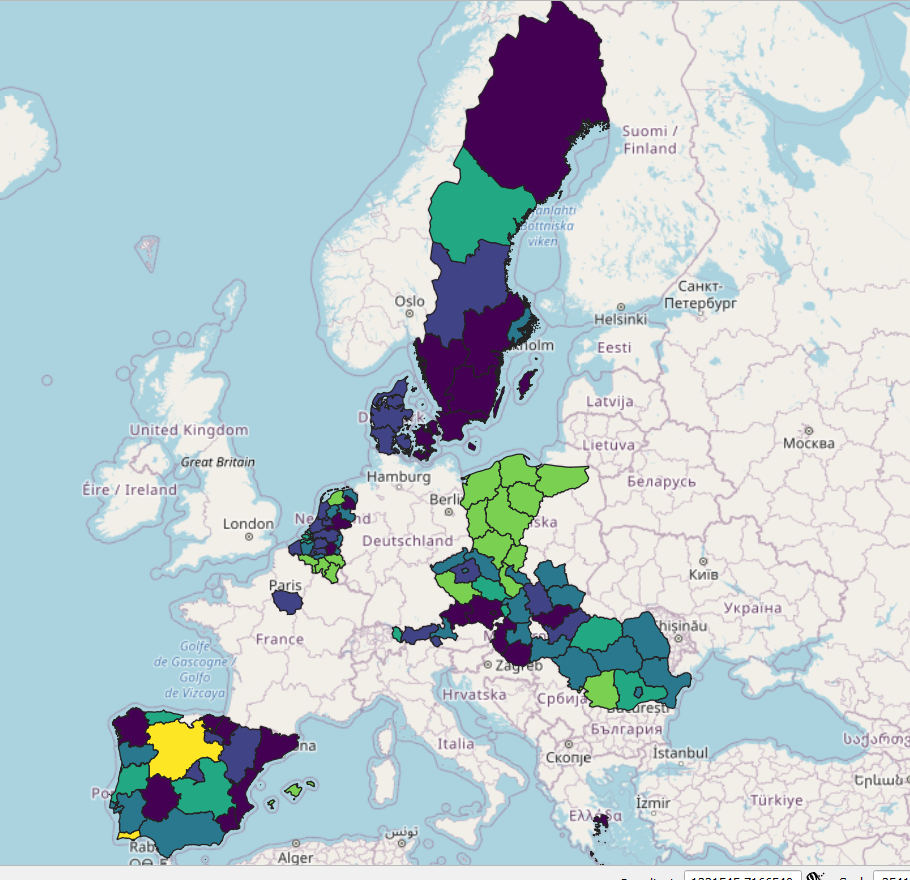

Retrospective Survey Harmonization Case Study - Climate Awareness Change in Europe 2013-2019.
Harmonizing survey variables and survey metadata.
 The first results before the harmonization of geographical coding.
The first results before the harmonization of geographical coding.
Retrospective survey harmonization comes with many challenges, as we have shown in the introduction to this tutorial case study. In this example, we will work with Eurobarometer’s data.
Click to expand table of contents of the post
Table of Contents
Please use the development version of retroharmonize:
devtools::install_github("antaldaniel/retroharmonize")
library(retroharmonize)
library(dplyr) # this is necessary for the example
library(lubridate) # easier date conversion
## Warning: package 'lubridate' was built under R version 4.0.4
library(stringr) # You can also use base R string processing functions
Get the Data
retroharmonize is not associated with Eurobarometer, or its creators,
Kantar, or its archivists, GESIS. We assume that you have acquired the
necessary files from GESIS after carefully reading their terms and you
placed it on a path that you call gesis_dir. The precise documentation
of the data we use can be found in this supporting
blogpost.
To reproduce this blogpost, you will need ZA5877_v2-0-0.sav,
ZA6595_v3-0-0.sav, ZA6861_v1-2-0.sav, ZA7488_v1-0-0.sav,
ZA7572_v1-0-0.sav in a directory that you will name gesis_dir.
#Not run in the blogpost. In the repo we have a saved version.
climate_change_files <- c("ZA5877_v2-0-0.sav", "ZA6595_v3-0-0.sav", "ZA6861_v1-2-0.sav",
"ZA7488_v1-0-0.sav", "ZA7572_v1-0-0.sav")
eb_waves <- read_surveys(file.path(gesis_dir, climate_change_files), .f='read_spss')
if (dir.exists("data-raw")) {
save ( eb_waves, file: file.path("data-raw", "eb_climate_change_waves.rda") )
}
if ( file.exists( file.path("data-raw", "eb_climate_change_waves.rda") )) {
load (file.path( "data-raw", "eb_climate_change_waves.rda" ) )
} else {
load (file.path("..", "..", "data-raw", "eb_climate_change_waves.rda") )
}
The eb_waves nested list contains five surveys imported from SPSS to
the survey class of
retroharmonize.
The survey class is a data.frame that retains important metadata for
further harmonization.
document_waves (eb_waves)
## # A tibble: 5 x 5
## id filename ncol nrow object_size
## <chr> <chr> <int> <int> <dbl>
## 1 ZA5877_v2-0-0 ZA5877_v2-0-0.sav 604 27919 139352456
## 2 ZA6595_v3-0-0 ZA6595_v3-0-0.sav 519 27718 119370440
## 3 ZA6861_v1-2-0 ZA6861_v1-2-0.sav 657 27901 151397528
## 4 ZA7488_v1-0-0 ZA7488_v1-0-0.sav 752 27339 169465928
## 5 ZA7572_v1-0-0 ZA7572_v1-0-0.sav 348 27655 80562432
Beware the object sizes. If you work with many surveys, memory-efficient programming becomes imperative. We will be subsetting whenever possible.
Metadata analysis
As noted before, prepare to work with nested lists. Each imported survey
is nested as a data frame in the eb_waves list.
Metadata: Protocol Variables
Eurobarometer calls certain metadata elements, like interviewee cooperation level or the date of a survey interview as protocol variable. Let’s start here. This will be our template to harmonize more and more aspects of the five surveys (which are, in fact, already harmonization of about 30 surveys conducted in a single ‘wave’ in multiple countries.)
# select variables of interest from the metadata
eb_protocol_metadata <- eb_climate_metadata %>%
filter ( .data$label_orig %in% c("date of interview") |
.data$var_name_orig: = "rowid") %>%
suggest_var_names( survey_program: "eurobarometer" )
# subset and harmonize these variables in all nested list items of 'waves' of surveys
interview_dates <- harmonize_var_names(eb_waves,
eb_protocol_metadata )
# apply similar data processing rules to same variables
interview_dates <- lapply (interview_dates,
function (x) x %>% mutate ( date_of_interview: as_character(.data$date_of_interview) )
)
# join the individual survey tables into a single table
interview_dates <- as_tibble ( Reduce (rbind, interview_dates) )
# Check the variable classes.
vapply(interview_dates, function(x) class(x)[1], character(1))
## rowid date_of_interview
## "character" "character"
This is our sample workflow for each block of variables.
- Get a unique identifier.
- Add other variables
- Harmonize the variable names
- Subset the data leaving out anything that you do not harmonize in this block.
- Apply some normalization in a nested list.
- When the variables are harmonized to same name, class, merge them
into a data.frame-like
tibbleobject.
Now finish the harmonization. Wednesday, 31st October 2018 should
become a Date type 2018-10-31.
require(lubridate)
harmonize_date <- function(x) {
x <- tolower(as.character(x))
x <- gsub("monday|tuesday|wednesday|thursday|friday|saturday|sunday|\\,|th|nd|rd|st", "", x)
x <- gsub("decemberber", "december", x) # all those annoying real-life data problems!
x <- stringr::str_trim (x, "both")
x <- gsub("^0", "", x )
x <- gsub("\\s\\s", "\\s", x)
lubridate::dmy(x)
}
interview_dates <- interview_dates %>%
mutate ( date_of_interview: harmonize_date(.data$date_of_interview) )
vapply(interview_dates, function(x) class(x)[1], character(1))
## rowid date_of_interview
## "character" "Date"
To avoid duplication of row IDs in surveys that may not be unique in different surveys, we created a simple, sequential ID for each survey, including the ID of the original file.
set.seed(2021)
sample_n(interview_dates, 6)
## # A tibble: 6 x 2
## rowid date_of_interview
## <chr> <date>
## 1 ZA7488_v1-0-0_7016 2018-10-28
## 2 ZA7488_v1-0-0_19187 2018-11-02
## 3 ZA6861_v1-2-0_1218 2017-03-18
## 4 ZA6861_v1-2-0_4142 2017-03-21
## 5 ZA7572_v1-0-0_12363 2019-04-17
## 6 ZA7572_v1-0-0_8071 2019-04-18
After this type-conversion problem let’s see an issue when an original SPSS variable can have two meaningful R representations.
Metadata: Geographical information
Let’s continue with harmonizing geographical information in the files.
In this example, var_name_suggested will contain the harmonized
variable name. It is likely that you have to make this call, after
carefully reading the original questionnaires and codebooks.
eb_regional_metadata <- eb_climate_metadata %>%
filter ( grepl( "rowid|isocntry|^nuts$", .data$var_name_orig)) %>%
suggest_var_names( survey_program: "eurobarometer" ) %>%
mutate ( var_name_suggested: case_when (
var_name_suggested: = "region_nuts_codes" ~ "geo",
TRUE ~ var_name_suggested ))
The harmonize_var_names() takes all variables in the subsetted,
geographical metadata table, and brings them to the harmonized
var_name_suggested name. The function subsets the surveys to avoid the
presence of non-harmonized variables. All regional NUTS codes become
geo in our case:
geography <- harmonize_var_names(eb_waves,
eb_regional_metadata)
If you are used to work with single survey files, you are likely to work
in a tabular format, which easily converts into a data.frame like
object, in our example, to tidyverse’s tibble. However, when working
with longitudinal data, it is far simpler to work with nested lists,
because the tables usually have different dimensions (neither the rows
corresponding to observations or the columns are the same across all
survey files.)
In the nested list, each list element is a single, tabular-format survey. (In fact, the survey are in retroharmonize’s survey class, which is a rich tibble that contains the metadata and the processing history of the survey.)
The regional information in the Eurobarometer files is contained in the
nuts variable. We want to keep both the original labels and values.
The original values are the region’s codes, and the labels are the
names. The easiest and fastest solution is the base R lapply loop.
geography <- lapply ( geography,
function (x) x %>% mutate ( region: as_character(geo),
geo : as.character(geo) )
)
Because each table has exactly the same columns, we can simply use
rbind() and reduce the list to a modern data.frame, i.e. a tibble.
geography <- as_tibble ( Reduce (rbind, geography) )
Let’s see a dozen cases:
set.seed(2021)
sample_n(geography, 12)
## # A tibble: 12 x 4
## rowid isocntry geo region
## <chr> <chr> <chr> <chr>
## 1 ZA7488_v1-0-0_7016 SI SI012 Podravska
## 2 ZA7488_v1-0-0_19187 PL PL63 Pomorskie
## 3 ZA6861_v1-2-0_1218 DK DK02 Sjaelland
## 4 ZA6861_v1-2-0_4142 FI FI1B Helsinki-Uusimaa
## 5 ZA7572_v1-0-0_12363 SE SE12 Oestra Mellansverige
## 6 ZA7572_v1-0-0_8071 IT ITH Nord-Est [IT]
## 7 ZA6861_v1-2-0_6145 IE IE021 Dublin
## 8 ZA6861_v1-2-0_24638 RO RO31 South [RO]
## 9 ZA7488_v1-0-0_11315 CY CY REPUBLIC OF CYPRUS
## 10 ZA6595_v3-0-0_27568 HR HR041 Grad Zagreb
## 11 ZA7572_v1-0-0_17397 CZ CZ06 Jihovychod
## 12 ZA6861_v1-2-0_10993 PT PT17 Lisboa
The idea is that we do similar variable harmonization block by block, and eventually we will join them together. Next step: socio-demography and weights.
Socio-demography and Weights
There are a few peculiar issues to look out for. This example shows that survey harmonization requires plenty of expert judgment, and you cannot fully automate the process.
The Eurobarometer archives do not use all weight and demographic
variable names consistently. For example, the wex variable, which is a
projected weight for the country’s 15 years old or older population is
sometimes called wex, sometimes wextra. The individual survey’s
post-stratification weight is the w1 variable, but this is not
necessarily what you need to use.
The suggest_var_names() function has a parameter for
survey_program: "eurobaromater" which normalizes a bit the most used
variables. For example, all variations of wex, wextra wil be noramlized
to wex. You can ignore this parameter and use your own names, too.
eb_demography_metadata <- eb_climate_metadata %>%
filter ( grepl( "rowid|isocntry|^d8$|^d7$|^wex|^w1$|d25|^d15a|^d11$", .data$var_name_orig) ) %>%
suggest_var_names( survey_program: "eurobarometer")
As you can see, using the original labels would not help, because they also contain various alterations.
eb_demography_metadata %>%
select ( filename, var_name_orig, label_orig, var_name_suggested ) %>%
filter (var_name_orig %in% c("wex", "wextra") )
## filename var_name_orig label_orig
## 1 ZA5877_v2-0-0.sav wextra weight extrapolated population 15 plus
## 2 ZA6595_v3-0-0.sav wextra weight extrapolated population 15 plus
## 3 ZA6861_v1-2-0.sav wex weight extrapolated population aged 15 plus
## 4 ZA7488_v1-0-0.sav wex weight extrapolated population aged 15 plus
## 5 ZA7572_v1-0-0.sav wex weight extrapolated population aged 15 plus
## var_name_suggested
## 1 wex
## 2 wex
## 3 wex
## 4 wex
## 5 wex
demography <- harmonize_var_names ( waves: eb_waves,
metadata: eb_demography_metadata )
Socio-demographic variables like level of highest education or occupation are rather country-specific. Eurobarometer uses standardized occupation and marital status scales, and a proxy for education levels, age of leaving full-time education.
This is a particularly tricky variable, because it’s coding in fact contains three different variables - school leaving age, except for students, and except for people who did not finish their compulsory primary school. And while school leaving age was a good proxy since the 1970s, in the age when the EU is promoting life-long-learning becomes less and less useful, as people stop and re-start their education throughout their lives.
example <- demography[[1]] %>%
mutate ( across ( -any_of(c("rowid", "w1", "wex")), as_character) ) %>%
mutate ( across (any_of(c("w1", "wex")), as_numeric) )
unique ( example$age_education )
## [1] "22" "25" "17"
## [4] "19" "12" "23"
## [7] "18" "20" "21"
## [10] "14" "24" "16"
## [13] "26" "15" "Still studying"
## [16] "DK" "31" "29"
## [19] "27" "13" "32"
## [22] "28" "30" "53"
## [25] "42" "62" "40"
## [28] "No full-time education" "Refusal" "37"
## [31] "39" "34" "35"
## [34] "47" "36" "45"
## [37] "51" "33" "43"
## [40] "38" "49" "46"
## [43] "41" "57" "7"
## [46] "48" "44" "50"
## [49] "56" "8" "11"
## [52] "10" "9" "75 years"
## [55] "6" "3" "54"
## [58] "55" "60" "64"
## [61] "2 years" "58" "52"
## [64] "72" "61" "4"
## [67] "63"
The seamingly trival age_exact variable has its own issues, too:
unique ( example$age_exact)
## [1] "54" "66" "56" "53" "33" "72"
## [7] "83" "62" "86" "77" "64" "46"
## [13] "44" "59" "60" "67" "63" "20"
## [19] "43" "37" "78" "49" "90" "45"
## [25] "28" "29" "30" "39" "51" "38"
## [31] "41" "71" "25" "48" "79" "88"
## [37] "61" "85" "70" "35" "81" "52"
## [43] "57" "27" "47" "15 years" "21" "42"
## [49] "32" "68" "36" "34" "19" "31"
## [55] "26" "23" "24" "22" "16" "84"
## [61] "65" "18" "55" "40" "50" "73"
## [67] "69" "87" "89" "74" "75" "98 years"
## [73] "76" "80" "58" "82" "17" "93"
## [79] "91" "92" "95" "94" "97"
Let’s see all the strange labels attached to age-type variables:
collect_val_labels(metadata: eb_demography_metadata %>%
filter ( var_name_suggested %in% c("age_exact", "age_education")) )
## [1] "2 years" "75 years"
## [3] "No full-time education" "Still studying"
## [5] "15 years" "98 years"
## [7] "96 years" "[NOT CLEARLY DOCUMENTED]"
## [9] "74 years" "99 and older"
## [11] "Refusal" "87 years"
## [13] "DK" "88 years"
We must handle many exception, so we created a function for this purpose:
remove_years <- function(x) {
x <- gsub("years|and\\solder", "", tolower(x))
stringr::str_trim (x, "both")}
process_demography <- function (x) {
x %>% mutate ( across ( -any_of(c("rowid", "w1", "wex")), as_character) ) %>%
mutate ( across (any_of(c("w1", "wex")), as_numeric) ) %>%
mutate ( across (contains("age"), remove_years)) %>%
mutate ( age_exact: as.numeric (age_exact)) %>%
mutate ( is_student: ifelse ( tolower(age_education): = "still studying",
1, 0),
no_education: ifelse ( tolower(age_education): = "no full-time education", 1, 0)) %>%
mutate ( education: case_when (
grepl("studying", age_education) ~ age_exact,
grepl ("education", age_education) ~ 14,
grepl ("refus|document|dk", tolower(age_education)) ~ NA_real_,
TRUE ~ as.numeric(age_education)
)) %>%
mutate ( education: case_when (
education < 14 ~ NA_real_,
education > 30 ~ 30,
TRUE ~ education ))
}
demography <- lapply ( demography, process_demography )
## Warning in eval_tidy(pair$rhs, env: default_env): NAs introduced by coercion
## Warning in mask$eval_all_mutate(quo): NAs introduced by coercion
## Warning in eval_tidy(pair$rhs, env: default_env): NAs introduced by coercion
## Warning in eval_tidy(pair$rhs, env: default_env): NAs introduced by coercion
## Warning in eval_tidy(pair$rhs, env: default_env): NAs introduced by coercion
## Warning in eval_tidy(pair$rhs, env: default_env): NAs introduced by coercion
## WE'll full join and not use rbind, because we have different variables in different waves.
demography <- Reduce ( full_join, demography )
## Joining, by: c("rowid", "isocntry", "w1", "wex", "marital_status", "age_education", "age_exact", "occupation_of_respondent", "occupation_of_respondent_recoded", "respondent_occupation_scale_c_14", "type_of_community", "is_student", "no_education", "education")
## Joining, by: c("rowid", "isocntry", "w1", "wex", "marital_status", "age_education", "age_exact", "occupation_of_respondent", "occupation_of_respondent_recoded", "respondent_occupation_scale_c_14", "type_of_community", "is_student", "no_education", "education")
## Joining, by: c("rowid", "isocntry", "w1", "wex", "marital_status", "age_education", "age_exact", "occupation_of_respondent", "occupation_of_respondent_recoded", "respondent_occupation_scale_c_14", "type_of_community", "is_student", "no_education", "education")
## Joining, by: c("rowid", "isocntry", "w1", "wex", "marital_status", "age_education", "age_exact", "occupation_of_respondent", "occupation_of_respondent_recoded", "respondent_occupation_scale_c_14", "type_of_community", "is_student", "no_education", "education")
Now let’s see what we have here:
set.seed(2021)
sample_n(demography, 12)
## # A tibble: 12 x 14
## rowid isocntry w1 wex marital_status age_education age_exact
## <chr> <chr> <dbl> <dbl> <chr> <chr> <dbl>
## 1 ZA7488_~ SI 0.828 1428. (Re-)Married: withou~ 19 43
## 2 ZA7488_~ PL 1.01 32830. (Re-)Married: withou~ 19 64
## 3 ZA6861_~ DK 0.641 3100. (Re-)Married: withou~ 22 78
## 4 ZA6861_~ FI 1.83 8601. (Re-)Married: childr~ 30 38
## 5 ZA7572_~ SE 0.342 2645. (Re-)Married: withou~ 17 68
## 6 ZA7572_~ IT 0.630 32287. (Re-)Married: childr~ 20 40
## 7 ZA6861_~ IE 0.868 3054. (Re-)Married: childr~ 32 42
## 8 ZA6861_~ RO 0.724 11805. (Re-)Married: withou~ 14 59
## 9 ZA7488_~ CY 0.691 1013. (Re-)Married: childr~ 18 67
## 10 ZA6595_~ HR 0.580 2098. Single living w part~ 27 30
## 11 ZA7572_~ CZ 1.86 16908. Single: without chil~ still studying 20
## 12 ZA6861_~ PT 0.932 7448. Widow: with children no full-time ~ 84
## # ... with 7 more variables: occupation_of_respondent <chr>,
## # occupation_of_respondent_recoded <chr>,
## # respondent_occupation_scale_c_14 <chr>, type_of_community <chr>,
## # is_student <dbl>, no_education <dbl>, education <dbl>
Harmonizing Variable Labels
So far we have been working with metadata, weights and socio-demography. In other words, we have not even started the desired harmonization of climate change awareness. The methodology is the same, but here we really must look out for the answer options in the questionnaire. (Refer to our data summary again here.)
climate_awareness_metadata <- eb_climate_metadata %>%
suggest_var_names( survey_program: "eurobarometer" ) %>%
filter ( .data$var_name_suggested %in% c("rowid",
"serious_world_problems_first",
"serious_world_problems_climate_change")
)
hw <- harmonize_var_names ( waves: eb_waves,
metadata: climate_awareness_metadata )
The retroharmoinze package comes with a generic
harmonize_values()
function that will change the value labels of categorical variables
(including binary ones) to a unitary format. It will also take care of
various types of missing values.
First, let’s go back to our metadata and collect all value labels that will show up with collect_val_labels():
collect_val_labels(climate_awareness_metadata)
## [1] "Climate change"
## [2] "International terrorism"
## [3] "Poverty, hunger and lack of drinking water"
## [4] "Spread of infectious diseases"
## [5] "The economic situation"
## [6] "Proliferation of nuclear weapons"
## [7] "Armed conflicts"
## [8] "The increasing global population"
## [9] "Other (SPONTANEOUS)"
## [10] "None (SPONTANEOUS)"
## [11] "Not mentioned"
## [12] "Mentioned"
## [13] "DK"
In this case, we want to select Climate change as the mentioned most
serious problem, and Climate change taken from a list of three
serious problems. The first question type is a single-choice one, where
Climate change is either mentioned, or the alternative answer is
labeled as Not mentioned. In the multiple choice case, the alternative
may be something else, for example, Spread of infectious diseases, as
we all well know by 2021.
We want to see who thought Climate change was the most serious
problem, or one of the most serious problems, so we label each mentions
of Climate change as mentioned and we pair it with a numeric value
of 1. All other cases are labeled as not_mentioned, with the
exceptions of various missing observations, which in these cases are
Do not know answers, Declined to answer cases, and Inappropriate
cases [The latter one is Eurobarometer’s label for questions that were
for one reason or other not asked from a particular interviewee – for
example, because the Turkish Cypriot community received a different
questionnaire.]
# positive cases
label_1: c("^Climate\\schange", "^Mentioned")
# missing cases
na_labels <- collect_na_labels( climate_awareness_metadata)
na_labels
## [1] "DK" "Inap. (10 or 11 in qa1a)"
## [3] "Inap. (coded 10 or 11 in qc1a)" "Inap. (coded 10 or 11 in qb1a)"
# negative cases
label_0 <- collect_val_labels( climate_awareness_metadata)
label_0 <- label_0[! label_0 %in% label_1 ]
The harmonize_serious_problems() function harmonizes the labels within
the special labeled class of retroharmonize. This class retains all
information to give categorical variables a character or numeric
representation, and various processing metadata for documentation
purposes. While this class is very reach (it contains whatever was
imported from SPSS’s proprietary data format and the history), it is not
suitable for statistical analysis. We could, of course, directly call
the
harmonize_values()
from the retroharmonize package, but the parameterization would be very
complicated even in a simple function call, not to mention a looped
call. Because this function is the heart of the
retroharmonize package, it has a tutorial
article
on its own.
harmonize_serious_problems <- function(x) {
label_list <- list(
from: c(label_0, label_1, na_labels),
to: c( rep ( "not_mentioned", length(label_0) ), # use the same order as in from!
rep ( "mentioned", length(label_1) ),
"do_not_know", "inap", "inap", "inap"),
numeric_values: c(rep ( 0, length(label_0) ), # use the same order as in from!
rep ( 1, length(label_1) ),
99997,99999,99999,99999)
)
harmonize_values(x,
harmonize_labels: label_list,
na_values: c("do_not_know"=99997,
"declined"=99998,
"inap"=99999),
remove: "\\(|\\)|\\[|\\]|\\%"
)
}
Our objects are rather big in memory, so first, let’s remove the surveys
that do not contain these world problem variables. In this cases, the
subsetted and harmonized surveys in the nested list have only one
columns, i.e. the rowid.
hw <- hw[unlist ( lapply ( hw, ncol)) > 1 ]
Now we have a smaller problem to deal with. With many surveys, it is easy to fill up your computer’s memory, so let’s start building up our joined panel data from a smaller set of nested, subsetted surveys.
hw <- lapply ( hw, function (x) x %>% mutate ( across ( contains("problem"), harmonize_serious_problems) ) )
Our lapply loop calls an anonymous function which in turn calls the
harmonize_serious_problems parameterized version of the
harmonize_values()
on all variables that have problem in their names.
once we are done, our variables have harmonized names, and harmonized
values, and harmonized label, but they are stored in the complex
retroharmonize_labelled_spss_survey
class, inherited from the haven_labelled_spss in
haven.
We reduced our single and multiple choice questions to binary choice
variables. We can now give them a numeric representation. Be mindful
that retroharmonize has special methods for its special labeled class
that retains metadata from SPSS. This means that as_character and
as_numeric knows how to handle various types of missing values,
whereas the base R as.character and as.numeric may coerce special
values to unwanted results. This is particularly dangerous with numeric
variables – and this is the reason why we introduced a new set of S3
objects and methods in the package.
We will ignore the differences between various forms of missingness, i.e. the person said that she did not know, or did not want to answer, or for some reason was not asked in the survey. In a more descriptive, non-harmonized analysis you would probably want to explore them as various ‘categories’ and use a character representation.
hw <- lapply ( hw, function(x) x %>% mutate ( across ( contains("problem"), as_numeric) ))
hw <- Reduce ( full_join, hw) # we must use joins instead of binds because the number of columns vary.
Let’s see what we have:
set.seed(2021)
sample_n (hw, 12)
## # A tibble: 12 x 3
## rowid serious_world_problems_fi~ serious_world_problems_climate_~
## <chr> <dbl> <dbl>
## 1 ZA6595_v3-0-0_23~ 0 NA
## 2 ZA7572_v1-0-0_70~ 0 0
## 3 ZA6595_v3-0-0_18~ 0 NA
## 4 ZA6861_v1-2-0_27~ 0 0
## 5 ZA6595_v3-0-0_26~ 0 NA
## 6 ZA7572_v1-0-0_19~ 0 1
## 7 ZA5877_v2-0-0_16~ 0 0
## 8 ZA6861_v1-2-0_12~ 0 0
## 9 ZA7572_v1-0-0_17~ 0 0
## 10 ZA5877_v2-0-0_17~ 0 1
## 11 ZA6861_v1-2-0_41~ 0 0
## 12 ZA6861_v1-2-0_61~ 0 1
Creating the Longitudional Table
Now we just need to join the partial table by the rowid together:
#start from the smallest (we removed the survey that had no relevant questionnaire item)
panel <- hw %>%
left_join ( geography, by: 'rowid' )
panel <- panel %>%
left_join ( demography, by: c("rowid", "isocntry") )
panel <- panel %>%
left_join ( interview_dates, by: 'rowid' )
And let’s see a small sample:
sample_n(panel, 12)
## # A tibble: 12 x 19
## rowid serious_world_pr~ serious_world_pr~ isocntry geo region w1 wex
## <chr> <dbl> <dbl> <chr> <chr> <chr> <dbl> <dbl>
## 1 ZA686~ 0 0 ES ES41 Casti~ 1.21 46787.
## 2 ZA686~ 0 0 RO RO31 South~ 0.724 11805.
## 3 ZA686~ 0 0 SK SK02 Zapad~ 0.774 3499.
## 4 ZA757~ 0 1 PT PT16 Centr~ 1.11 9336.
## 5 ZA659~ 1 NA HR HR041 Grad ~ 0.580 2098.
## 6 ZA659~ 1 NA RO RO21 North~ 1.21 20160.
## 7 ZA686~ 0 0 PT PT17 Lisboa 0.932 7448.
## 8 ZA659~ 0 NA GB-GBN UKI London 0.994 50133.
## 9 ZA757~ 0 0 CY CY REPUB~ 0.594 874.
## 10 ZA686~ 0 0 LT LT003 Klaip~ 0.623 1564.
## 11 ZA757~ 0 0 IE IE013 West ~ 0.490 1651.
## 12 ZA659~ 0 NA LT LT003 Klaip~ 1.16 2917.
## # ... with 11 more variables: marital_status <chr>, age_education <chr>,
## # age_exact <dbl>, occupation_of_respondent <chr>,
## # occupation_of_respondent_recoded <chr>,
## # respondent_occupation_scale_c_14 <chr>, type_of_community <chr>,
## # is_student <dbl>, no_education <dbl>, education <dbl>,
## # date_of_interview <date>
saveRDS ( panel, file.path(tempdir(), "climate_panel.rds"), version: 2)
# not evaluated
saveRDS( panel, file: file.path("data-raw", "climate-panel.rds"), version=2)
Putting It on a Map
This is not the end of the story. If you put all this on a map, the results are a bit disappointing.
Why? Because sub-national (provincial, state, county, district, parish) borders are changing all the time - within the EU and everywhere. The next step is to harmonize the geographical information. We have another CRAN released package to help you with. See the next post: Regional Climate Change Awareness Dataset.
Daniel Antal
Data Scientist & Founder of the Green Deal Data Observatory
Making big data work for everybody.